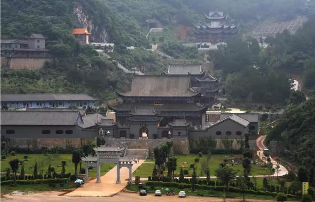
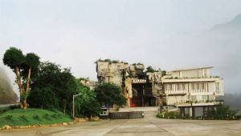

你当前位置：首页>走进翁源
翁源旅游
东华禅寺位于广东省韶关市翁源县郊2公里东华山风景区，南朝梁武帝天监元年（公元502年），印度智药三藏禅师始创东华，原名灵鹫寺。唐龙朔元年，六祖惠能于黄梅受衣钵，南归经此寺而隐修，改灵鹫寺为东华禅寺，后去宝林，翁邑自此有传： 先有东华后有南华，东华证道南华弘法。唐宋鼎盛，毁于明清。公元一九九七年万行法师乘愿再来，入此山掩关潜修三年，感天地之恩泽会阴阳之和谐，出关复建东华，丁亥仲秋，宝刹重现。昔杳无人迹，荒坡野岭，师手执刀斧，开山辟石，斩荆修路，满山栽树，今已菩提苍翠，绿树掩映。
 |
|
|  |
冷泉滩，三华李花，九仙桃花，岩庄客家群屋，黄花风铃木。风花雪月的柔情原始淳朴的村闲自在的慢生活一切你能想到的舒适与自由翁源都可以满足

涂志伟美术馆位于风景秀丽的滃江河畔，总投资6000多万元人民币，历时6年的精雕细琢，总建筑面积18000多平方米，主要功能是收藏、陈列涂志伟美术作品，是一家公益文化艺术机构，将长期向社会开放。馆内展示和收藏了涂志伟的代表作品400余件。
涂志伟美术馆的落成，成了翁源继三华李、九仙桃、东华寺、兰花基地、冷泉滩之后的一张新名片。经过6年建设，这里将成为翁源一座崭新的文化地标。
Copyright © Hejom 2017 by www.hejom.win all rights reserved
未经授权禁止转载，摘编，复制或者建立镜像，违者必究法律责任
phone:0751-2681000 Emai:1516161651@163.com